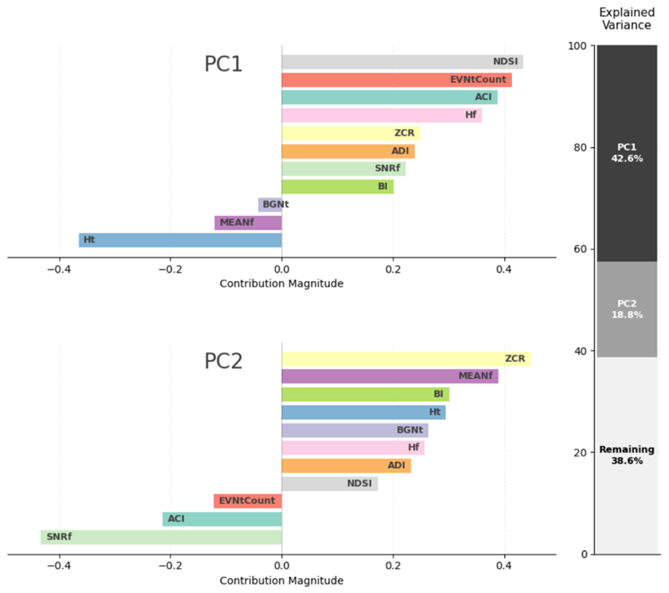

Evaluating Indices
An evaluation of the dashboard data revealed several interesting trends in the acoustic indices. Highlights are indicated below, and a more comprehensive summary can be found by downloading the Exploratory Summary.
Diel & Diurnal Trends
We conducted a qualitative evaluation of trends and differences across all datasets by reviewing heatmaps generated by normalizing the value of each acoustic index. These heatmaps were produced for either the full bandwidth or a reduced 16 kHz sampling rate and plotted by the hour of the day. Our objective was to uncover diel (24-hour cycle) and diurnal (daytime-focused) trends by visualizing how acoustic indices fluctuated throughout the day. Among the three available plots in the BioSound-MBON analytical tool, Plot 3 proved to be the most impactful. This plot displayed the range of normalized, user-selected index values by date on the x-axis and hour of the day on the y-axis, providing a clear temporal pattern for the month of February. We selected February 2019 as the common month for analysis to enable consistent comparisons across most datasets, with the exception of Key West, where data was collected in February 2020.
Key trends observed in our analysis included:
Observed Patterns
Our analysis of diel and diurnal trends across multiple datasets revealed intriguing patterns that appear to correlate with tidal cycles. For several datasets and across various acoustic indices, a notable pattern emerged that aligns with tidal fluctuations, characterized by larger index measurements approximately every 6 to 7 hours (Figure 1). This cyclic pattern exhibited a consistent shift of about one hour forward each day throughout February, suggesting a potential link to tidal rhythms. The Biscayne Bay (a mangrove ecosystem) and May River (an estuary) datasets demonstrated this trend most prominently across multiple indices. Both sites share similar shallow depths of approximately 4.5 meters, which may amplify the influence of tidal movements on acoustic measurements.
In addition to tidal-associated patterns, we identified a distinct diurnal trend across several datasets (Figure 2). This pattern manifested as either lower acoustic index values during daylight hours with higher values in the evening and nighttime, or the inverse, with heightened activity during the day. This diurnal fluctuation was consistently observed across multiple indices and appeared most frequently in the Gray’s Reef and Key West datasets. Unlike the shallow environments of Biscayne Bay and May River, these sites feature recorder depths of 16 meters and 23 meters, respectively. The increased depth at these locations might contribute to the observed light-driven acoustic patterns, possibly influenced by the behaviors of marine organisms, variations in abiotic noise sources, or changes in water column properties throughout the day.
Figure 1: Example of apparent tidal pattern represented in multiple indices. This example from Biscayne Bay in February is the ACTspMean (Temporal Index), 32 kHz sampling rate.
Figure 2: Diurnal trends observed in multiple datasets and indices. This example includes A) Gray’s Reef, BGNf index (Amplitude Index) calculated from 48 kHz data and B) Key West, BGNf index (Amplitude Index) calculated from 48 kHz data.
We observed that the patterns present in the native bandwidth of each acoustic index were often mirrored in the low sampling rate examples, albeit with some variations in the intensity of index values (Figure 3). This consistency in patterns across both the full bandwidth and the reduced 16 kHz sampling rate suggests that much of the influence on these acoustic indices may be concentrated in the lower frequency ranges. Lower frequencies often capture sounds from a broad spectrum of sources, including environmental noise, certain marine mammal vocalizations, and anthropogenic activities, which might drive these observed trends. The alignment of patterns across sampling rates reinforces the potential utility of lower frequency monitoring for capturing meaningful ecological and environmental signals.
Figure 3: Similar patterns exhibited in full bandwidth and decimated data. This example includes A) Gray’s Reef, BGNf index (Amplitude Index) calculated from 48 kHz data and B) Key West, BGNf index (Amplitude Index) calculated from 16 kHz data.
Relationship with Environmental Data
We examined categories of acoustic indices to assess whether any consistent trends emerged by region, particularly focusing on whether similar habitats exhibited comparable correlations with water classes. However, our results did not reveal a clear pattern of consistency across similar environments. For instance, given the similarity in diel patterns between Biscayne Bay and May River, we initially hypothesized that these regions would exhibit comparable correlations with Seascapes water classes. Contrary to our expectations, Table 2 demonstrates that each region displayed distinctly different correlation profiles. Biscayne Bay showed strong positive correlations among many of the complexity indices, whereas May River presented variable, low to moderate correlations, suggesting that even within seemingly similar shallow water habitats, underlying environmental or ecological differences influence acoustic index relationships differently.
Table 2: Pearson correlation coefficient values for Biscayne Bay and May River for water class 15. Extreme green cells indicates large positive correlation, and a large negative value indicates a strong negative correlation.
To explore this further, we shifted our focus to per-index correlation measures per water class, aiming to determine whether at least specific acoustic index measurements maintained consistent correlations within particular water classes. This analysis involved plotting the distribution of mean index values, calculated across eight-day intervals to align with the temporal resolution of the remotely sensed water class data, and comparing these to the observed correlation coefficients. For example, Water Class 12, which comprises a substantial portion of the ONC-MEF and OOI-HYDBBA106 datasets (Figure 4), exhibited opposite extreme correlation coefficients between these datasets. We visualized the mean index values for the SNRt, HpairedShannon, and EVNtMean indices to interpret these trends. Our analysis revealed that increased index values were associated with lower extreme correlation values for both EVNtMean and SNRt (Figure 5). However, this pattern did not hold for HpairedShannon, which showed reduced index measures at the ONC-MEP site, despite a similarly strong negative correlation coefficient. Importantly, while specific trends within single water classes were occasionally evident, these associations did not translate consistently across other water classes. For instance, in Water Class 15 (Figure 6), high values of HpairedShannon did not correlate with a drastic decrease in correlation coefficients, demonstrating the complex and potentially site-specific nature of these relationships.
Figure 4: Composition of water class data for the period of March through April 2019 to give context in the representation of water classes in a region. Only February is incorporated in subsequent analyses. Water class 12 is only found in the OOI-HYDBBA106 and ONC-MEF datasets.
Figure 5: Plots of the distribution of mean index values associated with water class 12. Only datasets with profiles consistent of 5 or more cells of the specified water class are reported. Pearson correlation coefficients are reported for comparison to index measurements. Water class 12 is only represented in ONC-MEF and OOI-HYDBBA106. This figure displays measurements for EVNtMean (A), H_pairedShannon (B), and SNRt (C).
Figure 6: Distribution of mean H_pairedShannon measurements by dataset and associated correlation coefficient for water class 15. No relationship between correlation coefficients and measurements is noted across sites.
Initial Exploration of Multivariate Analyses
As a cursory investigation into the potential use of a combined index approach for evaluating the unique natures of these datasets, we applied two advanced analytical techniques to explore how a multi-index framework might enhance our understanding of marine soundscapes. This preliminary analysis aimed to determine whether combining multiple acoustic indices could reveal latent patterns and relationships not evident when indices are considered in isolation. The analytical methods employed included:
Principal Component Analysis (PCA): Performed on 10 select presentative acoustic indices from each index category (e.g., per site to reduce dimensionality and highlight key patterns.
K-Means Clustering: Classified sites into 8 groups based on their acoustic profiles, providing insights into site relationships and ecological significance.
We explored the natural structure of the acoustic indices by combining two complementary analytical techniques. We applied Principal Component Analysis (PCA) to the normalized indices to show that the multidimensional relationships could be mapped onto two principal dimensions (Figure 7). The dimensional reduction allowed us to identify the main gradients of variation. Each feature’s contribution to these principal components was carefully measured through loading coefficients, revealing which variables were most influential. In parallel, we introduced k-means clustering (k=8) to identify whether the natural groupings that emerge coincided with the geographical origins of the measured indices.

Figure 7: Principal component contributions of acoustic index to PC1 and PC2.
Our analysis revealed that k-means clustering patterns did not significantly correlate with geographical locations (Figure 8A). Interestingly, however, location groupings formed distinct clusters within the principal component space (Figure 8B). We observed that geographically proximate regions often displayed similar acoustic profiles, suggesting a spatial gradient in acoustic properties. This spatial coherence provides promising evidence that acoustic indices may effectively characterize different soundscapes, potentially offering a quantitative method for distinguishing between acoustic environments.
Figure 8: PCA plots by k-means clusters (A) and location clusters (B).
Visual representations of the Principal Component Analysis (PCA) and K-Means clustering results were generated to support the interpretation of clustering and site associations. These visualizations allow for an interactive exploration of the multivariate analysis, enabling users to compare K-Means clusters and site-specific clusters for the set of 10 indices utilized in the cursory review of multivariate methods. To provide an interactive perspective, these visualizations are available online at: Exploring BioSound Data.